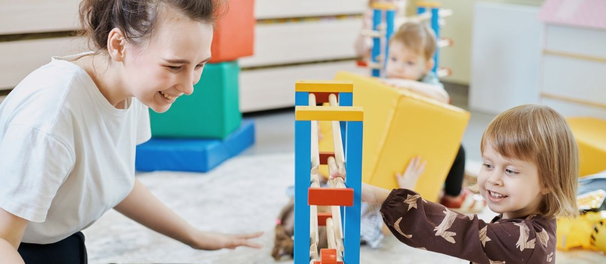

Адаптация ребёнка к детскому саду: как пройти её без слёз


Первый месяц в саду решает, полюбит ребёнок это место или будет цепляться за куртку мамы до весны. Хорошая новость: адаптация управляема. Ниже разбираем, сколько она длится на самом деле, что можно подготовить за месяц до первого дня и как вести себя в раздевалке, чтобы не сделать хуже.

- Лёгкая адаптация занимает две-три недели, средняя до полутора месяцев, тяжёлая до трёх. Норма первые две.
- Готовить ребёнка нужно за месяц: режим, самообслуживание, опыт расставания с мамой.
- Главная ошибка родителей: уходить тайком и затягивать прощание. Обе стороны одной проблемы.
01Что такое адаптация и почему она обязательна
Адаптация это перестройка всего организма ребёнка под новые условия: другие взрослые, другой ритм, чужая еда, двадцать детей вокруг вместо одной мамы. Нервная система реагирует на это стрессом, и это нормально. Вопрос только в силе и длительности.
Педагоги делят адаптацию на три степени.
| Степень | Сколько длится | Что происходит |
|---|---|---|
| Лёгкая | 2-3 недели | Ребёнок плачет при расставании, но быстро отвлекается. Ест, спит, играет. Настроение выравнивается к концу второй недели. |
| Средняя | 1-1,5 месяца | Слёзы дольше, аппетит и сон нарушены, возможны простуды. Ребёнок держится за воспитателя, к детям идёт не сразу. |
| Тяжёлая | 2-3 месяца и дольше | Плачет большую часть дня, отказывается от еды, откатывается в навыках: снова просится на руки, мочит штаны. Нужна помощь психолога и пересмотр режима посещения. |
Большинство детей проходят первые две. Тяжёлая степень встречается редко и почти всегда связана с тем, что ребёнка отдали слишком рано или резко. Как понять, готов ли ребёнок, разобрали в статье про возраст для сада.
02За месяц до первого дня
Адаптация начинается дома. Вот что стоит сделать за четыре недели.
Режим как в саду
Узнайте у сада распорядок и перестройте домашний день под него: подъём, завтрак, прогулка, обед, дневной сон, полдник. Особенно важен дневной сон в одно и то же время. Если ребёнок засыпает в четыре, а в саду тихий час в час дня, первые недели будут тяжёлыми.
Самообслуживание
Ребёнок должен уметь: есть ложкой, пить из чашки, проситься на горшок, надевать и снимать обувь, мыть руки. Не нужно требовать идеального результата. Нужно, чтобы он пробовал сам. В группе, где все дети одеваются самостоятельно, отстающий чувствует себя неуверенно.
Опыт расставания
Оставляйте ребёнка с бабушкой, няней или другом семьи на час, потом на два, потом на полдня. Ребёнок должен усвоить простую вещь: мама уходит и всегда возвращается. Если до сада он ни разу не оставался без вас, первый день в группе станет первым расставанием в жизни, и это слишком много за раз.
Разговоры о саде
Рассказывайте, что в саду будет: игрушки, дети, прогулки, воспитатель по имени. Сходите на экскурсию вместе, покажите группу, площадку, кроватку. Не обещайте, что будет только весело: скажите, что иногда будет грустно без мамы, и это нормально.

03Первая неделя: схема посещения
В садах ONE! адаптацию строим ступенями. Схема примерная, педагог корректирует её под конкретного ребёнка.
- Дни 1-2
Ребёнок приходит на час-полтора вместе с мамой или папой. Родитель сидит в группе или рядом, ребёнок осваивает пространство.
- Дни 3-4
Ребёнок остаётся один на два часа, до прогулки. Родитель уходит коротко и возвращается вовремя.
- Дни 5-7
Остаётся до обеда. Это первый серьёзный шаг: еда в саду.
- Вторая неделя
Остаётся на сон. Если уснул, адаптация идёт по плану.
- Третья неделя
Полный день.
Если на каком-то шаге ребёнок сильно откатывается, возвращаемся на шаг назад и держимся там несколько дней.
04Как прощаться в раздевалке
Здесь родители делают две ошибки, и обе усиливают стресс.
Пока ребёнок отвлёкся на игрушку, мама исчезает. Через минуту он оборачивается, мамы нет, и мир становится ненадёжным. На следующий день он не отпустит вас ни на секунду.
Десять минут объятий, слёзы мамы, «ну ещё чуть-чуть». Ребёнок считывает тревогу и понимает: происходит что-то страшное.
Правильно так: короткий ритуал, одна и та же фраза, уверенный тон, уход. «Я иду на работу, вернусь после сна, обнимаю, пока». Ритуал важнее слов: можно придумать особое рукопожатие или помахать в окно. Ребёнок начнёт ждать ритуала, и страх расставания уйдёт.
05Что нормально, а что повод поговорить с педагогом
В первые недели нормально всё из этого списка: слёзы утром, отказ от еды в первые дни, ночные пробуждения, капризы вечером, простуда. Организм тратит силы на перестройку.
- ребёнок плачет весь день, даже спустя часы после расставания, и так больше двух недель;
- полностью отказывается от еды больше трёх дней подряд;
- откатился в навыках: перестал проситься на горшок, снова говорит только отдельными словами;
- стал агрессивным дома или, наоборот, слишком тихим;
- боится идти в сад настолько, что заболевает по утрам.
Это не значит, что сад не подходит. Это значит, что схему адаптации нужно пересобрать вместе с педагогом.
Каждому ребёнку в первый месяц назначаем сопровождающего педагога: одного взрослого, к которому он привыкает первым. График посещения обсуждаем с родителями заранее и меняем по ходу. В Монтессори-группах ребёнок сам выбирает, чем заняться, и это снимает часть стресса: он не обязан делать то, что делают все, в первую же неделю.
06Частые вопросы
Пока нет, если после ухода мамы он успокаивается в течение десяти-пятнадцати минут и дальше нормально играет. Спросите педагога, как ребёнок ведёт себя в группе. Утренние слёзы при спокойном дне это ещё лёгкая или средняя степень.
Болезнь неизбежна, иммунитет знакомится с новой средой. После выздоровления возвращайтесь на шаг назад в схеме посещения: если до болезни оставался на сон, первые дни забирайте до сна.
Да, и лучше одну и ту же. Знакомый предмет работает как якорь безопасности.
Ребёнок утром сам идёт в группу, рассказывает дома про детей и воспитателя, ест и спит как обычно, и главное, у него появляется в саду любимое занятие.
07Что дальше
Приходите на экскурсию с ребёнком. Покажем группу, познакомим с педагогом и вместе наметим схему первого месяца. Телефон +7 (495) 152-22-21.